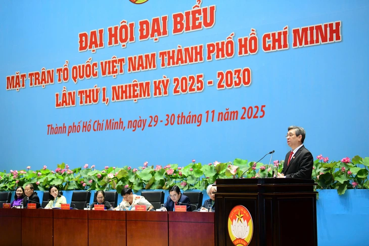

Ngày 30-11, Đại hội đại biểu Mặt trận Tổ quốc Việt Nam TP.HCM tiếp tục làm việc, ra mắt Ủy ban Mặt trận Tổ quốc Việt Nam TP. HCM lần thứ I, nhiệm kỳ 2025-2030.
Trước đó tại phiên làm việc ngày 29-11, đại hội đã hiệp thương số lượng Ủy ban Mặt trận Tổ quốc Việt Nam TP.HCM nhiệm kỳ 2025-2030 là 168 người. Tại đại hội đã hiệp thương 146 người, khuyết 22 sẽ bổ sung sau đại hội.
Ủy ban Mặt trận Tổ quốc Việt Nam TP.HCM lần thứ I, nhiệm kỳ 2025-2030 đã họp hội nghị lần thứ nhất, hiệp thương các chức danh chủ tịch, phó chủ tịch ủy ban.
Kết quả hiệp thương được báo cáo đại hội. Theo đó, ông Nguyễn Phước Lộc - Phó bí thư Thành ủy, Chủ tịch Ủy ban Mặt trận Tổ quốc Việt Nam TP.HCM - được hiệp thương tiếp tục làm Chủ tịch Ủy ban Mặt trận Tổ quốc Việt Nam TP.HCM, nhiệm kỳ 2025-2030.
Ủy ban có 8 phó chủ tịch chuyên trách và 6 phó chủ tịch không chuyên trách.

Phó bí thư Thành ủy, Chủ tịch Ủy ban Mặt trận Tổ quốc Việt Nam TP.HCM Nguyễn Phước Lộc phát biểu tại đại hội